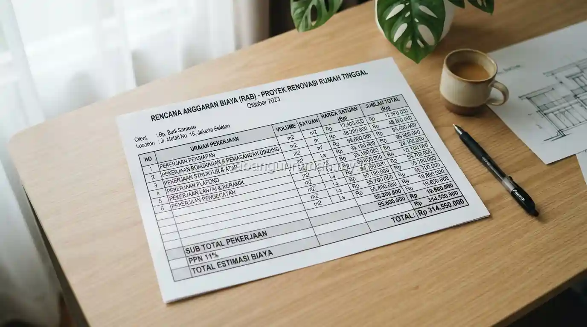

Daftar Isi
Jasa pembuatan RAB rumah profesional menyusun dokumen rincian biaya yang mencakup seluruh item pekerjaan beserta analisis harga satuan, sehingga dapat digunakan sebagai lampiran pengajuan KPR maupun dokumen tender proyek.
Apa Saja Isi Dokumen RAB yang Disusun oleh Jasa Profesional?
Dokumen RAB profesional mencakup daftar item pekerjaan lengkap mulai dari persiapan, struktur, dinding, atap, hingga finishing, disertai volume pekerjaan, analisis harga satuan, dan total biaya per kategori yang disusun secara sistematis.
Analisis harga satuan yang disertakan biasanya merinci komponen bahan dan upah untuk setiap item pekerjaan, sehingga dokumen ini tidak hanya menampilkan angka akhir, tetapi juga dasar perhitungan yang transparan dan dapat dipertanggungjawabkan.
Format penyusunan dokumen ini umumnya mengikuti standar yang lazim digunakan dalam dunia konstruksi, sehingga lebih mudah dipahami oleh pihak lain yang perlu mengevaluasinya. Komponen utama yang biasanya tercakup dalam dokumen RAB profesional:
- Pekerjaan persiapan (pembersihan lahan, pengukuran, direksi keet)
- Pekerjaan struktur (pondasi, kolom, balok, pelat lantai)
- Pekerjaan dinding dan plesteran
- Pekerjaan atap (rangka, penutup atap, talang)
- Pekerjaan mekanikal dan elektrikal (instalasi listrik, pipa air)
- Pekerjaan finishing (cat, keramik, kusen, pintu, jendela)
Apakah Dokumen RAB Ini Bisa Dipakai untuk Pengajuan KPR ke Bank?
RAB yang disusun secara detail dan sistematis umumnya dapat digunakan sebagai salah satu dokumen pendukung pengajuan Kredit Pemilikan Rumah untuk keperluan pembangunan atau renovasi, karena bank biasanya membutuhkan gambaran rinci penggunaan dana pinjaman.

Meski demikian, penerimaan dokumen RAB sebagai syarat pengajuan tetap bergantung pada kebijakan masing-masing bank, sehingga pemohon sebaiknya turut mengonfirmasi format dan kelengkapan dokumen yang disyaratkan oleh pihak bank terkait sebelum pengajuan dilakukan.
Dokumen RAB yang rapi dan detail umumnya memberi kesan lebih meyakinkan dibandingkan estimasi kasar yang dibuat tanpa analisis harga satuan yang jelas. Beberapa hal yang perlu dikonfirmasi ke bank sebelum pengajuan:
- Format dokumen RAB yang diterima (Excel, PDF, atau format khusus bank)
- Apakah RAB perlu disertai gambar kerja atau denah rumah
- Apakah diperlukan tanda tangan atau stempel dari pihak kontraktor
- Batas maksimal nilai RAB yang dapat diajukan sesuai plafon KPR
Bagaimana Proses Kerja Sama untuk Membuat RAB Rumah Secara Profesional?
Proses dimulai dari pengumpulan data gambar kerja atau denah rumah yang akan dijadikan dasar perhitungan, dilanjutkan dengan survey harga material dan upah sesuai lokasi proyek, kemudian penyusunan dokumen RAB lengkap dengan analisis harga satuan.
Setelah draf RAB selesai disusun, biasanya terdapat sesi diskusi untuk memastikan seluruh item pekerjaan sudah sesuai dengan kebutuhan proyek sebelum dokumen final diserahkan kepada klien.
Bagi pemilik rumah atau developer kecil yang membutuhkan RAB matang untuk keperluan pengajuan KPR atau tender, dapat langsung menghubungi tim jasa kontraktor rumah kami untuk memulai proses penyusunan dokumen sesuai kebutuhan proyek Anda.